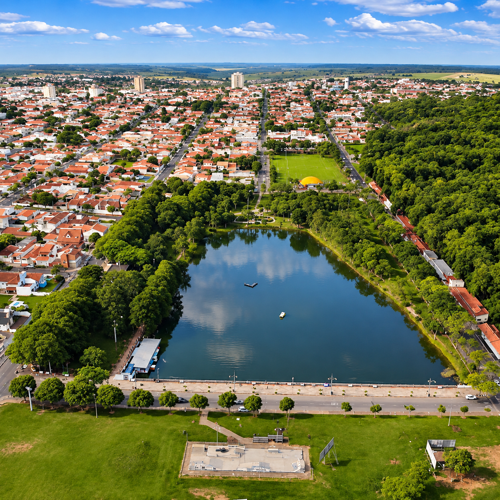
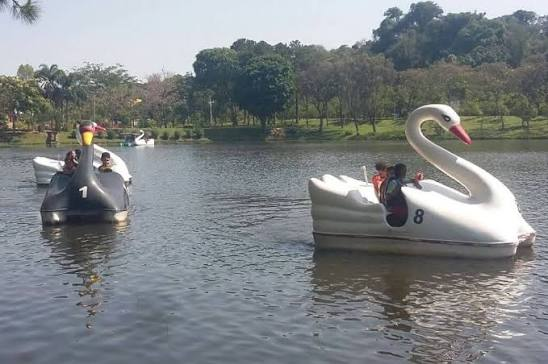
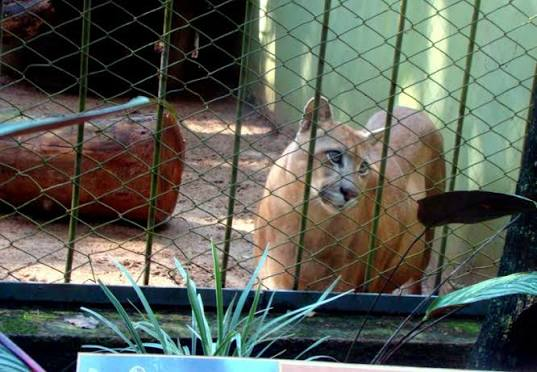
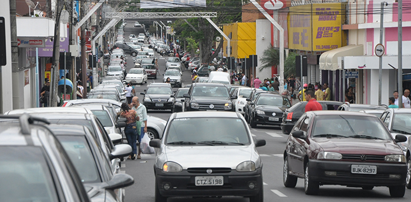

População
43.051 habitantes
Dados populacionais oficiais disponíveis no portal IBGE Cidades.
Garça - São Paulo
História, desenvolvimento, cultura e oportunidades no interior do estado de São Paulo.

Garça é um município localizado na região centro-oeste do estado de São Paulo. Sua formação está relacionada ao processo de ocupação e desenvolvimento do interior paulista durante as primeiras décadas do século XX.
O município foi fundado em 4 de outubro de 1924 e teve sua trajetória marcada pela agricultura, especialmente pela produção de café, que contribuiu para seu crescimento econômico e populacional.
Com o passar dos anos, Garça ampliou suas atividades econômicas, desenvolvendo setores industriais, comerciais e de prestação de serviços.
Atualmente, a cidade reúne características de um município do interior, com atividades empresariais, instituições de ensino, espaços culturais e áreas de lazer.
Conheça algumas informações sobre
43.051 habitantes
Dados populacionais oficiais disponíveis no portal IBGE Cidades.
1924
Data de fundação: 4 de outubro de 1924.
São Paulo
Região centro-oeste do estado de São Paulo.
Fonte: Instituto Brasileiro de Geografia e Estatística (IBGE) .
A economia de Garça apresenta atividades relacionadas à agricultura, indústria, comércio e prestação de serviços.
A atividade agrícola possui importância histórica para o desenvolvimento do município, especialmente a cafeicultura.
O setor industrial contribui para a geração de empregos, a produção de bens e o desenvolvimento econômico local.
Os estabelecimentos comerciais e prestadores de serviços atendem à população e contribuem para a circulação de recursos na economia municipal.
Garça possui espaços públicos, atrações culturais e locais de lazer que fazem parte da identidade da comunidade.




As manifestações culturais e os eventos realizados em Garça contribuem para preservar tradições, promover encontros e movimentar o comércio local.
Um dos eventos culturais conhecidos da cidade, relacionado à presença das cerejeiras e à valorização da cultura japonesa.
Campanhas promocionais e iniciativas empresariais podem incentivar o consumo e fortalecer os estabelecimentos locais.
Apresentações, exposições e atividades comunitárias contribuem para a integração dos moradores.
Conheça empresas e organizações que contribuem para o desenvolvimento da nossa cidade.
Conhecer Empresas